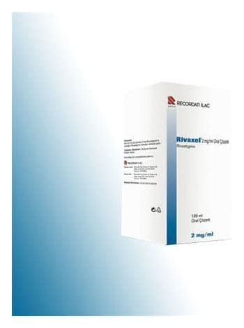

Rivaxel 2 mg/ml 120 ml Oral Solüsyon

Ne için kullanılır
KT · Bölüm 1RİVAXEL oral çözeltiyi, çocuk emniyet kapaklı, amber renkli cam şişe içerisinde 120 mililitrelik berrak sarı renkli bir çözelti olarak takdim edilmektedir Oral solüsyon, plastik bir tüp kabında bulunan oral dozlama şırıngası ve borulu tıpa ile birlikte paketlidir. Her 1 ml solüsyon, 3.2 mg rivastigmin hidrojen tartarata eşdeğer bazda 2 mg rivastigmin içerir.
RİVAXEL, kolinesteraz inhibitörleri olarak isimlendirilmiş maddeler sınıfına dahildir. Alzheimer veya Parkinson hastalığı olan hastalarda hafıza bozukluğunun tedavisinde kullanılır.